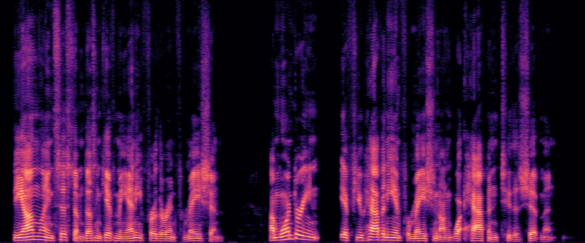
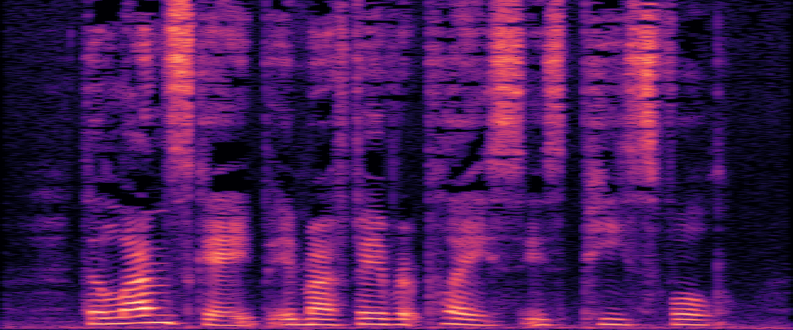
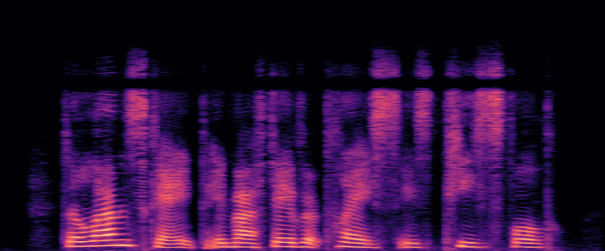
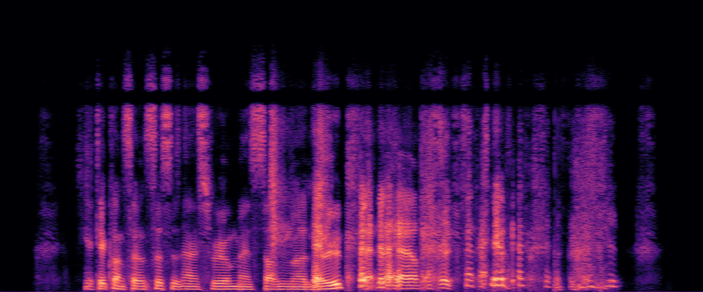
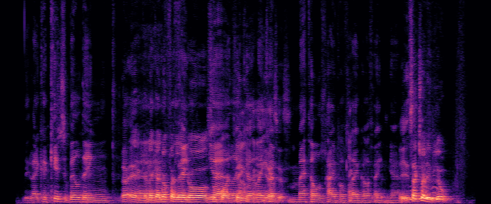

PhoenixCodec: Taming Neural Speech Coding for Extreme Low-Resource Scenarios
Zixiang Wan★†
Haoran Zhao‡†
Guochang Zhang‡
Runqiang Han‡
Jianqiang Wei‡*
Yuexian Zou★*
‡ Audio Innovation Technology Department, Anker Inc, Beijing, China
★ Guangdong Provincial Key Laboratory of Ultra High Definition Immersive Media Technology,
Peking University, Shenzhen, China
† Equal contribution. * Corresponding authors.
AbstractThis paper presents PhoenixCodec, a comprehensive neural speech coding and decoding framework designed for extremely low-resource conditions. The proposed system integrates an optimized asymmetric frequency-time architecture, a Cyclical Calibration and Refinement (CCR) training strategy, and a noise-invariant fine-tuning procedure. Under stringent constraints—computation below 700 MFLOPs, latency less than 30 ms, and dual-rate support at 1 kbps and 6 kbps —existing methods face a trade-off between efficiency and quality. PhoenixCodec addresses these challenges by alleviating the resource-scattering of conventional decoders, employing CCR to escape local optima, and enhancing robustness through noisy-sample fine-tuning. In the LRAC 2025 Challenge Track 1, the proposed system ranked third overall and demonstrated the best performance at 1 kbps in both real-world noise and reverberation and intelligibility in clean tests, confirming its effectiveness. |
|---|
Model Architecture
We propose a frequency–time domain fusion end-to-end audio codec that achieves high-quality speech transmission under strict resource constraints.
The overall architecture, illustrated in Figure 1, consists of a frequency-domain encoder, a residual vector quantizer (RVQ), and a time-domain decoder.
The input audio is first transformed into an amplitude spectrogram via short-time Fourier transform (STFT).
|
|---|
EXPERIMENTSDatasets
All training data in this study are sourced from the official
LRAC2025 dataset and underwent rigorous filtering and preprocessing prior to use. For noise data, labels were predicted
using a pre-trained audio understanding model, and any non-pure noise samples containing speech were removed to ensure
clean noise content. For reverberation data, room impulse responses (RIRs) were truncated before convolution, retaining
only the 1 ms segment following the peak. This reduces long-tail decay that can impair speech clarity while preserving spatial characteristics.
Implementation Details
The proposed model has an overall computational complexity of 698 M FLOPs and 1.48 M parameters, with the encoder
and RVQ module accounting for 399 M FLOPs and 1.17 M
parameters, and the decoder for 299 M FLOPs and 0.32 M parameters. The system operates at a sampling rate of 24 kHz,
with a frame length of 720 samples and a frame shift of 288
samples (approximately 83 Hz frame rate). In the STFT computation, only frequency bins 0–240 (0–8kHz) are used, effectively yielding a 24kHz to 16 kHz downsampling without
introducing additional latency.
The RVQ module consists of six codebooks, each containing 4096 entries (indexed with 12-bit codes) and a vector
dimension of 8. During inference, either 1 codebook (for 1
kbps) or all 6 codebooks (for 6 kbps) can be selected, enabling
operation at two different bitrates. The encoder channel configuration is [32, 32, 32, 128, 335], with time-axis kernel sizes
and strides of [1, 1, 1, 1] and frequency-axis kernel sizes and
strides of [5, 4, 4, 3]. The decoder channels are [117, 58, 29,
14, 7], with upsampling rates of [3, 4, 4, 4]. For the discriminators, the MPD uses periods [2, 3, 5, 7, 11], and the MRD
operates with window sizes [128, 256, 512, 1024, 2048].
|
|---|
Performance Comparison
|
|||||||||
|---|---|---|---|---|---|---|---|---|---|
Audio Examples
Audio Examples
Clean Speech
| Ground Truth | PhoenixCodec (6kbps) | PhoenixCodec (1kbps) |
|---|---|---|

|
||
|  | ||

|
||
DRT English Clean
| Ground Truth | PhoenixCodec (1kbps) |
|---|---|

|
Real-world Noise
| Ground Truth | PhoenixCodec (6kbps) | PhoenixCodec (1kbps) |
|---|---|---|
|  |  | |
Simultaneous Talkers
| Ground Truth | PhoenixCodec (6kbps) | PhoenixCodec (1kbps) |
|---|---|---|
|  | ||
|  |